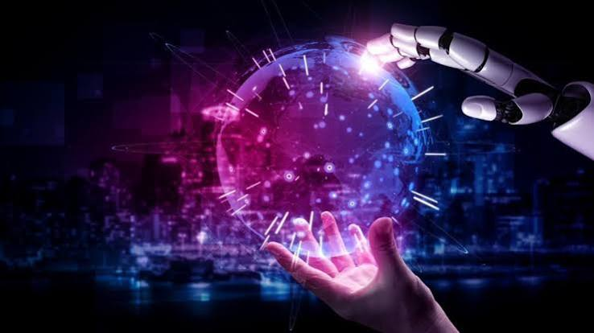
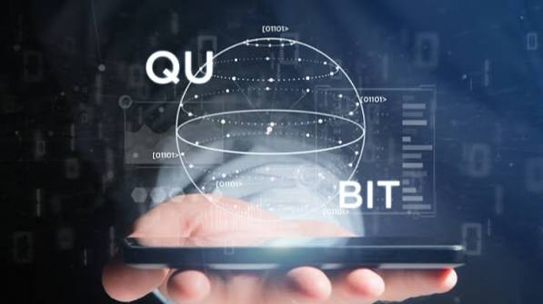
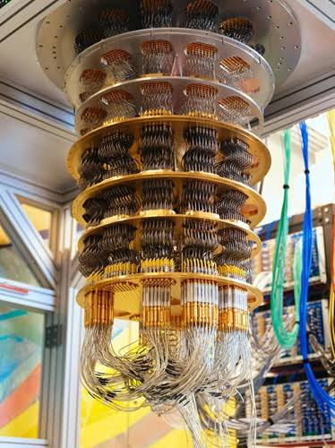
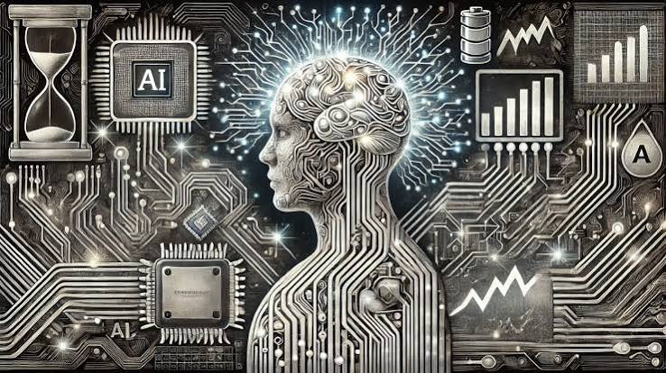
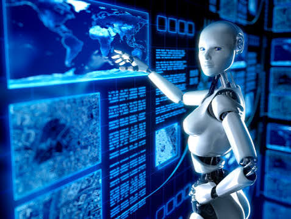
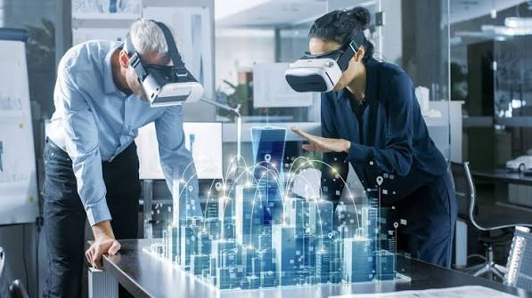
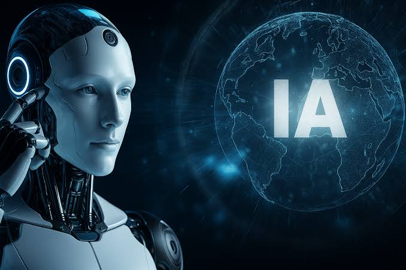
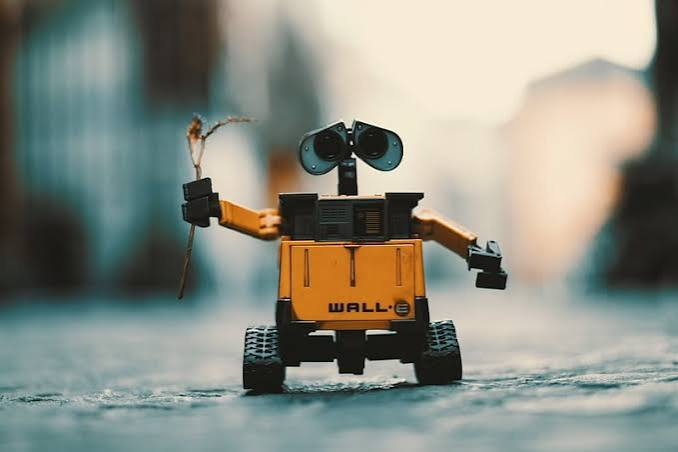

La inteligencia artificial general (AGI), los ordenadores cuánticos y los robots
están transformando nuestra visión del futuro. En este contenido se exploran
algunas de las tecnologías que podrían cambiar profundamente nuestra sociedad.

Tecnologías que podrían transformar el futuro.
Objetivos
Comprender el potencial de la computación cuántica.
Analizar el desarrollo de la inteligencia artificial.
Conocer el avance de la robótica.
Reflexionar sobre los cambios sociales relacionados con estas tecnologías.
La Revolución Cuántica: Cambiando las Reglas del Universo
La computación cuántica representa un cambio importante en la manera de procesar
información. A diferencia de los ordenadores tradicionales, utiliza principios
de la mecánica cuántica para realizar determinados cálculos.
"Dios no juega a los dados con el átomo"
Superposición: permite que un sistema cuántico pueda representar
diferentes estados al mismo tiempo.
Entrelazamiento: permite establecer relaciones entre partículas
cuánticas incluso cuando están separadas.

Representación de la computación cuántica.
Computación Cuántica: La Carrera por la Precisión
Uno de los principales desafíos de los ordenadores cuánticos es su fragilidad.
Mantener los estados cuánticos requiere un alto nivel de precisión y control.
Los sistemas cuánticos son extremadamente sensibles.
La corrección de errores es uno de los grandes desafíos.
Se busca alcanzar niveles de precisión cada vez mayores.
La tecnología podría tener importantes aplicaciones en seguridad.

El desafío de construir ordenadores cuánticos precisos.
Se estima que los avances en esta tecnología podrían llegar a afectar incluso
a los sistemas actuales de seguridad informática.
La Era de la Inteligencia Artificial y los Agentes Emocionales
La inteligencia artificial continúa evolucionando y puede llegar a desarrollar
sistemas capaces de realizar tareas cada vez más complejas.
También se analiza el desarrollo de agentes emocionales y sistemas de inteligencia
artificial capaces de interactuar con las personas de una manera más natural.
Algunos ejemplos plantean la posibilidad de utilizar estos sistemas como
acompañantes o asistentes para diferentes grupos de personas.

La evolución de la inteligencia artificial y los agentes inteligentes.
Gobernanza y el Nuevo Contrato Social
El avance de estas tecnologías también plantea preguntas sobre la forma en que
deberán organizarse las sociedades del futuro.
Gobernanza relacionada con la inteligencia artificial.
Posibles impuestos relacionados con la automatización y los robots.
Debates sobre una posible renta básica.
Importancia de mantener una ciencia abierta y accesible.

La automatización y sus posibles efectos sobre la sociedad.
Podcast
A continuación se presenta el episodio seleccionado para analizar estos temas.
Galería de imágenes

Futuro de la tecnología.

Inteligencia artificial.

Robótica.
Conclusiones
La computación cuántica podría transformar diferentes áreas de la informática.
La inteligencia artificial continúa avanzando rápidamente.
La robótica y la automatización podrían modificar diferentes aspectos
de la sociedad.
Estos avances también plantean importantes preguntas sociales y éticas.